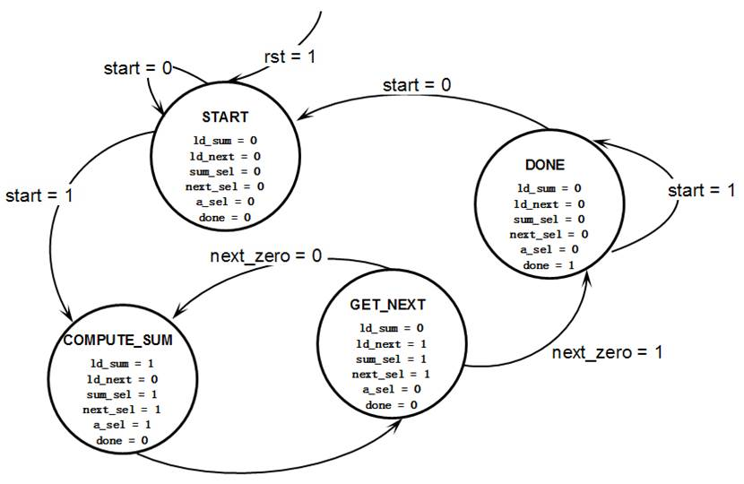
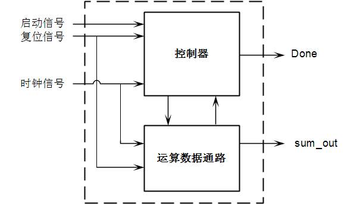
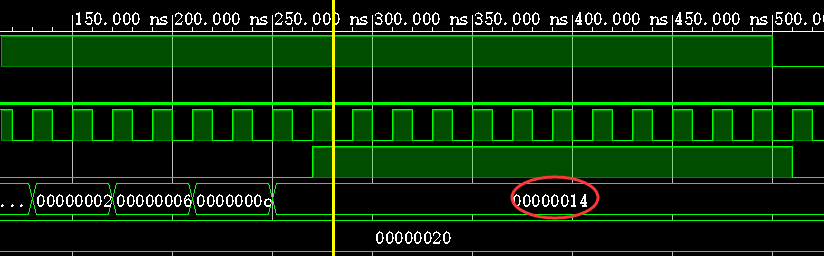

Verilog Review
Course: Verilog
Last edited on: 20240523
Last edited by: Mikyxx
Verilog考试info
-
题型：第一题分别用数据流/模块化/行为描述实现一个模块，之后均为代码填空，后两题涉及到仿真文件的编写以及仿真波形图的绘制
-
唯一强调：使用Verilog内置的门模块时，可能会有多个输入，此时一定将输出写在参数列表的首位！事实上，参数列表标准写法应该是先输出再输入，但实验代码相反，因为对于自己实现的模块参数顺序并不重要。例如与门调用代码如下：
and a1(out, 输入1, 输入2, 输入3,...);
Verilog语法tips
-
数值常量格式：
<宽度>'<进制><数值>，进制包括d(十进制，尽量只在仿真程序中使用)，h(十六进制，常用)，b(二进制，常用)，o(八进制，几乎不用)。 -
parameter可实现调用模块时传入不同参数，定义如下：module mux2_1#(parameter N = 2)(out, a, b, sel); // 模块外参数定义 parameter N = 2; // 模块内参数定义，二选一使用即可 output [N-1:0] out; ...顶层模块中调用如下：
mux2_1 #(4) dut0(out, x, y, s); // 实例化后参数N值为4 mux2_1 #(.N(4)) dut0(out, x, y, s;)// 名称关联注意模块内参数定义最好打头写，参数需先定义才能在后续数据定义中使用。
-
initial语句与always语句用于行为建模，不能嵌套，块中语句的左边变量必须是reg类型，若块中有多条语句，需用begin/end组合。initial块均从0时刻开始并行独立执行，并只执行一次；always块从0时刻开始不断循环执行，只要@()中事件成立就执行块中所有语句。 -
always@()有两种事件控制方式：电平敏感用于描述组合逻辑，列表内有信号发生电平变化就执行，信号间并列可用or或,，也可用*替换列表，此时编译器根据块内容自动识别列表；边沿触发用于描述时序逻辑，always@(posedge clk)表示clk从低到高变化时执行语句，即时钟上升沿，反之negedge表示从高到低。// 三种写法等价 always@(a or b) begin out = a + b; end always@(a, b) begin out = a + b; end always@(*) begin out = a + b; end -
输出声明有
reg与无reg区别在于：-
output只能被赋值一次，且只能被连接到一个wire或reg； -
output reg可以被多次赋值，且可以被连接到任何类型的wire或reg。如果需要在always块中对output进行赋值或修改，必须使用output reg。
-
-
wire数据类型：wire表示单向数据线，其作用是连接模块的输入和输出。在模块中，wire被用作数据线，将输入端口连接到模块的输出端口，以实现信号传输；在模块之间，wire可以用于连接两个模块的输出和输入，只在assign语句的右边变量或模块间联系输出与输入的变量出现，always与initial块中的变量均不能是wire。 -
何时使用
wire，何时使用reg？-
assign语句的左边变量必须定义为wirereg a, b; wire ans; assign ans = a + b; -
连接子模块输入输出的中间变量必须定义为
wire -
begin\end之间的变量必须定义为reg
-
-
过程赋值分为两种：阻塞型过程赋值
=，非阻塞型过程赋值<=。区别在于阻塞赋值在执行完之前，后面的语句不能执行，即顺序执行；而非阻塞赋值与后面的相关语句并行执行。initial与always块中一般使用<=，assign语句中一般使用=。
实验2
实验2_1 直接驱动7段数码管
内容：
-
用SW[7:0]直接驱动7段数码管的CA-CG、DP显示单元。
-
用SW[15:8]选择被驱动的7段数码管。
-
用LED[15:0]显示SW的状态。
代码：
`timescale 1ns / 1ps
module _7Seg_Driver_Direct(SW, CA, CB, CC, CD, CE, CF, CG, DP, AN, LED);
input [15:0] SW; // 16位拨动开关
output CA, CB, CC, CD, CE, CF, CG, DP; // 7段数码管驱动，低电平有效
output [7:0] AN; // 7段数码管片选信号，低电平有效
output [15:0] LED; // 16位LED显示，高电平有效
assign {CA, CB, CC, CD, CE, CF, CG, DP} = ~SW[7:0];
assign AN[7:0] = ~SW[15:8];
assign LED[15:0] = SW[15:0];
endmodule
-
timescale:`
timescale为编译指令，影响后续所有编译的模块的时延值，直至遇到下一个timescale，因此每个模块文件必须以timescale打头，否则在板上运行时可能有误。 -
连续赋值：用
assign标识，始终处于激活状态，一旦右边变量发生变化，表达式立即进行计算并将结果赋给左边变量。 -
向量拼接：使用
{}连接运算符，将向量or标量拼接成更大的向量，整体赋值而无需遍历小向量or标量。 -
高低电平转换：使用
~逐位取非运算符，对一个高电平有效的向量逐位取非即可得到低电平有效。
实验2_2 译码驱动7段数码管
内容：
-
用SW[3:0]输入待显示的单个数字。（四位二进制，范围0~15）
-
用SW[15:8]选择被驱动的7段数码管。
-
用LED[15:0]显示SW的状态。
代码：
`timescale 1ns / 1ps
module _7Seg_Driver_Decode(SW, SEG, AN, LED);
input [15:0] SW; // 16位拨动开关
output reg [7:0] SEG; // 7段数码管驱动，低电平有效
output [7:0] AN; // 7段数码管片选信号，低电平有效
output [15:0] LED; // 16位LED显示
always@(SW) begin
case (SW[3:0])
4'b0000 : SEG = 8'b11000000; // 0
4'b0001 : SEG = 8'b11111001; // 1
4'b0010 : SEG = 8'b10100100; // 2
4'b0011 : SEG = 8'b10110000; // 3
4'b0100 : SEG = 8'b10011001; // 4
4'b0101 : SEG = 8'b10010010; // 5
4'b0110 : SEG = 8'b10000010; // 6
4'b0111 : SEG = 8'b11111000; // 7
4'b1000 : SEG = 8'b10000000; // 8
4'b1001 : SEG = 8'b10011000; // 9
4'b1010 : SEG = 8'b10001000; // A
4'b1011 : SEG = 8'b10000011; // b
4'b1100 : SEG = 8'b11000110; // C
4'b1101 : SEG = 8'b10100001; // d
4'b1110 : SEG = 8'b10000110; // E
4'b1111 : SEG = 8'b10001110; // F
endcase
end
assign AN[7:0] = ~SW[15:8];
assign LED[15:0] = SW[15:0];
endmodule
- 显示码：八位二进制数，从最高位开始依次对应7段管中的小数点，中二，左一，左二，中三，右二，右一，中一，低电平有效，即要亮的赋0。
- 注意：此时
SEG在always块中被赋值，因此需声明为reg。
实验2_3 译码选择7段数码管
内容：
-
连接“译码显示模块”与“译码选择模块”，实现“静态7段数码管显示”模块。
-
用SW[3:0]输入待显示的单个二进制数字（0-15）。
-
用SW[15:13]输入点亮的数码管二进制编号（0-7号）。
-
用LED[15:0]显示SW的状态。
代码：
// 译码显示模块
`timescale 1ns / 1ps
module _7Seg_Driver_Decode(SW, SEG);
input [3:0] SW; // 16位拨动开关
output reg [7:0] SEG; // 7段数码管驱动，低电平有效
always@(SW) begin
case (SW)
4'b0000 : SEG = 8'b11000000; // 0
4'b0001 : SEG = 8'b11111001; // 1
4'b0010 : SEG = 8'b10100100; // 2
4'b0011 : SEG = 8'b10110000; // 3
4'b0100 : SEG = 8'b10011001; // 4
4'b0101 : SEG = 8'b10010010; // 5
4'b0110 : SEG = 8'b10000010; // 6
4'b0111 : SEG = 8'b11111000; // 7
4'b1000 : SEG = 8'b10000000; // 8
4'b1001 : SEG = 8'b10011000; // 9
4'b1010 : SEG = 8'b10001000; // A
4'b1011 : SEG = 8'b10000011; // b
4'b1100 : SEG = 8'b11000110; // C
4'b1101 : SEG = 8'b10100001; // d
4'b1110 : SEG = 8'b10000110; // E
4'b1111 : SEG = 8'b10001110; // F
endcase
end
endmodule
// 译码选择模块
`timescale 1ns / 1ps
module _7Seg_Driver_Select(SW, AN);
input [2:0] SW; // 16位拨动开关
output reg [7:0] AN; // 7段数码管片选信号，低电平有效
always@(SW) begin
case (SW)
3'b000 : AN = 8'b11111110; // 0
3'b001 : AN = 8'b11111101; // 1
3'b010 : AN = 8'b11111011; // 2
3'b011 : AN = 8'b11110111; // 3
3'b100 : AN = 8'b11101111; // 4
3'b101 : AN = 8'b11011111; // 5
3'b110 : AN = 8'b10111111; // 6
3'b111 : AN = 8'b01111111; // 7
endcase
end
endmodule
// 顶层模块，连接两个子模块
`timescale 1ns / 1ps
module _7Seg_Driver_Choice(SW, SEG, AN, LED);
input [15:0] SW; // 16位拨动开关
output [7:0] SEG; // 7段数码管驱动，低电平有效
output [7:0] AN; // 7段数码管片选信号，低电平有效
output [15:0] LED; // 16位LED显示
_7Seg_Driver_Decode d(
.SW(SW[3:0]),
.SEG(SEG)
);
_7Seg_Driver_Select s(
.SW(SW[15:13]),
.AN(AN)
);
assign LED[15:0] = SW[15:0];
endmodule
-
结构描述与模块调用：结构描述即将子模块与主模块分开实现。将其分别写在一个.v文件中，文件名为模块名，且.v文件放在一个项目内。调用子模块格式为：
模块名 [#(.参数1)(参数1值),...] [实例名]( .形参1(实参1), .形参2(实参2), ...... );实例名可任意取名，也可省略，若省略则默认为实例名。在Vivado中还需将主模块.v文件Set as Top以标记其为主模块，右键点击.v文件即可看到Set as Top。
实验2_4 二进制-BCD码转换器（选做）
内容：
- 即在实验2_3的基础上将10-15以十进制显示而非十六进制的A-E。
-
用SW[3:0]输入待转换为BCD码的单个二进制数字（0-15）。
-
用SW[14:12]输入点亮的数码管二进制编号（0-7号）。
-
用SW[15]选择显示BCD码的十位或个位（0为个位，1为十位）。
-
用LED[15:0]显示SW的状态。
代码：
// 译码显示模块
`timescale 1ns / 1ps
module _7Seg_Driver_Decode(SW, CHOICE, SEG);
input [3:0] SW; // 16位拨动开关
input CHOICE;
output reg [7:0] SEG; // 7段数码管驱动，低电平有效
integer ans, i, multi;
reg [3:0] t;
always@(SW) begin
// 将二进制数转换为十进制数
for(i = 0, multi = 1, ans = 0; i < 4; i = i + 1) begin
ans = ans + multi * SW[i];
multi = multi * 2;
end
if(CHOICE) // 取十位
ans = ans / 10;
else // 取个位
ans = ans % 10;
case (ans)
0 : SEG = 8'b11000000; // 0
1 : SEG = 8'b11111001; // 1
2 : SEG = 8'b10100100; // 2
3 : SEG = 8'b10110000; // 3
4 : SEG = 8'b10011001; // 4
5 : SEG = 8'b10010010; // 5
6 : SEG = 8'b10000010; // 6
7 : SEG = 8'b11111000; // 7
8 : SEG = 8'b10000000; // 8
9 : SEG = 8'b10011000; // 9
endcase
end
endmodule
// 译码选择模块
`timescale 1ns / 1ps
module _7Seg_Driver_Select(SW, AN);
input [2:0] SW; // 16位拨动开关
output reg [7:0] AN; // 7段数码管片选信号，低电平有效
always@(SW) begin
case (SW)
3'b000 : AN = 8'b11111110; // 0
3'b001 : AN = 8'b11111101; // 1
3'b010 : AN = 8'b11111011; // 2
3'b011 : AN = 8'b11110111; // 3
3'b100 : AN = 8'b11101111; // 4
3'b101 : AN = 8'b11011111; // 5
3'b110 : AN = 8'b10111111; // 6
3'b111 : AN = 8'b01111111; // 7
endcase
end
endmodule
// _BCD_Driver.v 连接上述两个模块
`timescale 1ns / 1ps
module _BCD_Driver(SW, SEG, AN, LED);
input [15:0] SW; // 16位拨动开关
output [7:0] SEG; // 7段数码管驱动，低电平有效
output [7:0] AN; // 7段数码管片选信号，低电平有效
output [15:0] LED; // 16位LED显示
_7Seg_Driver_Decode fun1(
.SW(SW[3:0]),
.CHOICE(SW[15]),
.SEG(SEG)
);
_7Seg_Driver_Select fun2(
.SW(SW[14:12]),
.AN(AN)
);
assign LED[15:0] = SW[15:0];
endmodule
- 本选做实验难点在于用Verilog实现二进制数向十进制数的转换与数位的选择，语法与C语言类似。
实验3
实验3_1 设计时钟分频器控制LED灯闪亮
内容：
-
实验板的系统时钟信号由E3引脚提供，频率100MHz，周期10ns。分频即将时钟信号的频率进行降低，N分频指将频率降低为原来的1/N，一般将N定义为参数，便于上层模块改变分频系数。
-
设计一个频率为1Hz、周期为1s的分频器divider。可在模块中定义参数delay，值为50,000,000，定义变量cnt对系统时钟clk的上升沿进行计数，每当cnt=delay（50,000,000 * 10ns = 0.5s）时，反转分频时钟信号CK的电平，即可得到周期为1s的分频时钟信号。
-
注意一个时钟周期中高电平与低电平各一半，周期1s意味着每隔0.5s电平需要反转一次，因此我们以0.5s为一次计数终点。
-
设计上层模块lab3_1，实例化divider，用其输出信号控制LED[0]闪亮，即一秒闪一次；可以修改divider中参数delay，观察闪亮速度的变化。
代码：
`timescale 1ns / 1ps
module divider(clk, clk_N);
parameter N = 100_000_000; // 1Hz的时钟,N=fclk/fclk_N
input clk; // 系统时钟
output reg clk_N; // 分频后的时钟
reg [31:0] counter; /* 计数器变量，通过计数实现分频。
当计数器从0计数到(N/2-1)时，
输出时钟反转，计数器清零 */
always@(posedge clk) begin // 时钟上升沿
counter <= counter + 1;
if(counter >= N / 2 - 1) begin
clk_N <= ~clk_N; // 输出时钟反转
counter <= 0; // 计数器清零
end
end
endmodule
实验3_2 设计3位计数器
内容：
-
计数器即在时钟信号沿的控制下自动加或减的时序电路。
-
本实验仅要求实现自动加1的3位二进制计数器，逢8送0。
代码：
`timescale 1ns / 1ps
module counter(clk, out);
input clk; // 计数时钟
output reg [2:0] out; // 计数值
always@(posedge clk) begin // 在时钟上升沿计数器加1
if (out >= 7)
out <= 0;
else
out <= out + 1;
end
endmodule
实验3_3 计数器控制LED灯闪亮
内容：
- 设计一个包含分频器与计数器的上层模块，使用分频时钟控制计数，并用输出的计数值控制3个LED灯闪亮。
代码：
`timescale 1ns / 1ps
module divideCounter(clk, out);
input clk;
output [2:0] out;
wire clk_N;
divider d(
.clk(clk),
.clk_N(clk_N)
);
counter c(
.clk(clk_N),
.out(out)
);
endmodule
-
wire用例：如本实验代码所示，clk_N是divider的输出与counter的输入，作为子模块间传输用的中间数据，被定义为wire。 -
调用已有模块：在加入子模块源文件时，选择添加已有文件（Add Files），并务必勾选"Copy sources into project"，将备份加入本项目以便修改。
实验3_4 设计只读存储器（ROM）
内容：
- 设计一个容量为8单元的4位只读存储器，存放待显示数字0、2、4、6、8、A、C、E的4位二进制编码。可在
initial语句中对存储器进行初始化。
代码：
`timescale 1ns / 1ps
module rom8x4(addr, data);
input [2:0] addr; // 地址
output [3:0] data; // 地址addr处存储的数据
reg [3:0] mem[7:0]; // 8个4位的存储器
initial begin // 初始化存储器
mem[0]=4'b0000;
mem[1]=4'b0010;
mem[2]=4'b0100;
mem[3]=4'b0110;
mem[4]=4'b1000;
mem[5]=4'b1010;
mem[6]=4'b1100;
mem[7]=4'b1110;
end
assign data[3:0] = mem[addr];// 读取addr单元的值输出
endmodule
- 数组定义：
reg [n:0] mem[m:0]表示m个n位存储器。
实验3_5 设计3_8解码器与7段显示译码器
- 实验2中已设计，可直接复用。
代码：
`timescale 1ns / 1ps
module decoder3_8(num, sel);
input [2:0] num; // 数码管编号：0~7
output reg [7:0] sel; // 7段数码管片选信号，低电平有效
always@(num) begin
case(num)
3'b000 : sel[7:0] = 8'b11111110;
3'b001 : sel[7:0] = 8'b11111101;
3'b010 : sel[7:0] = 8'b11111011;
3'b011 : sel[7:0] = 8'b11110111;
3'b100 : sel[7:0] = 8'b11101111;
3'b101 : sel[7:0] = 8'b11011111;
3'b110 : sel[7:0] = 8'b10111111;
3'b111 : sel[7:0] = 8'b01111111;
endcase
end
endmodule
`timescale 1ns / 1ps
module pattern(code, patt);
input [3:0] code; // 16进制数字的4位二进制编码
output reg [7:0] patt; // 7段数码管驱动，低电平有效
always@(code) begin
case(code[3:0])
4'b0000 : patt = 8'b11000000;
4'b0001 : patt = 8'b11111001;
4'b0010 : patt = 8'b10100100;
4'b0011 : patt = 8'b10110000;
4'b0100: patt = 8'b10011001;
4'b0101: patt = 8'b10010010;
4'b0110: patt = 8'b10000010;
4'b0111: patt = 8'b11111000;
4'b1000: patt = 8'b10000000;
4'b1001: patt = 8'b10011000;
4'b1010: patt = 8'b10001000;
4'b1011: patt = 8'b10000011;
4'b1100: patt = 8'b11000110;
4'b1101: patt = 8'b10100001;
4'b1110: patt = 8'b10000110;
4'b1111: patt = 8'b10001110;
endcase
end
endmodule
实验3_6 实现数码管动态显示
内容：
- 设计数码管动态显示的顶层模块，八个数码管从右至左依次显示存储器中的数据，每秒亮一个。
代码：
`timescale 1ns / 1ps
module dynamic_scan(clk, SEG, AN);
input clk; // 系统时钟
output [7:0] SEG; // 分别对应CA、CB、CC、CD、CE、CF、CG和DP
output [7:0] AN; // 8位数码管片选信号
wire clk_tmp;
wire [2:0] num;
wire [3:0] code;
// 分频器将系统时钟转换为分频时钟
divider d1(
.clk(clk),
.clk_N(clk_tmp)
);
// 计数器根据分频时钟进行计数
counter c1(
.clk(clk_tmp),
.out(num[2:0])
);
// 将计数结果转换为数码管序号，即亮第几个数码管
decoder3_8 d2(
.num(num[2:0]),
.sel(AN[7:0])
);
// 用计数结果在ROM中寻址，返回将显示的数字
rom8x4 r1(
.addr(num[2:0]),
.data(code[3:0])
);
pattern p1(
.code(code[3:0]),
.patt(SEG[7:0])
);
endmodule
实验3_7 实现“跑马灯”（选做）
内容：
-
增加三个开关，左中右；左右两个开关控制跑马灯的方向，即实验3_6中数码管亮起的方向；中间开关停止跑动，八个数码管“同时”显示只读存储器中的数据。
-
实现思路：数码管序号与显示的数字已绑定，即哪个数码管显示哪个数已确定，只与计数结果有关，因此解码器、ROM、译码器均无需修改，只需修改分频器与计数器。控制方向可通过计数器的自动加/减1实现，显然计数器自动加1时数字向左移动，自动减1时向右移动，此外还需考虑非法输入，除了拨动左边或右边开关外的情况下，计数器停止计数，此时数字不移动。停止跑动可通过提高分频时钟频率实现，我们将分频时钟周期定为1s时可以观察到数码管以1s的间隔分别亮起，可以想象，如果我们将周期降低，数码管在很短的一段时间内逐个亮起，形如闪烁，只要周期足够小，使人眼感受不到闪烁，即可在视觉上“同时”显示不同数字。经实验，此处N选用1000。
代码：
`timescale 1ns / 1ps
module divider(clk, clk_N, SW);
input clk;
input [2:0] SW;
output reg clk_N;
integer N = 100_000_000;
reg [31:0] counter;
always@(posedge clk) begin
case(SW)
3'b010: N = 1_000;
default: N = 100_000_000;
endcase
counter <= counter + 1;
if(counter >= N / 2 - 1) begin
clk_N <= ~clk_N; // 输出时钟反转
counter <= 0; // 计数器清零
end
end
endmodule
`timescale 1ns / 1ps
module counter(clk, out, SW);
input clk;
input [2:0] SW;
output reg [2:0] out;
always@(posedge clk) begin
case(SW)
3'b100 : out <= out + 1;
3'b001 : out <= out - 1;
default : out <= out;
endcase
end
endmodule
`timescale 1ns / 1ps
module dynamic_scan(clk, SEG, AN, SW);
input clk;
input [2:0] SW;
output [7:0] SEG;
output [7:0] AN;
wire clk_n;
wire [2:0] count;
wire [7:0] code;
divider d1(
.clk(clk),
.clk_N(clk_n),
.SW(SW)
);
counter c1(
.clk(clk_n),
.out(count[2:0]),
.SW(SW)
);
decoder3_8 d2(
.num(count[2:0]),
.sel(AN[7:0])
);
rom8x4 r1(
.addr(count[2:0]),
.data(code[3:0])
);
pattern p1(
.code(code[3:0]),
.patt(SEG[7:0])
);
endmodule
实验4
数据通路设计
-
n位全加器模块
`timescale 1ns / 1ps module full_adder(A, B, ans); parameter DATA_WIDTH = 8; input [DATA_WIDTH-1:0] A; input [DATA_WIDTH-1:0] B; output reg [DATA_WIDTH-1:0] ans; initial begin ans = 0; end always@(A, B) begin ans <= A + B; end endmodule- 实验要求各器件的数据线宽度初始设计为8位，但构成数据通路时可以扩充至16位或32位。因此将宽度定义为参数，用
parameter传参进行扩展。
- 实验要求各器件的数据线宽度初始设计为8位，但构成数据通路时可以扩充至16位或32位。因此将宽度定义为参数，用
-
n位2选1多路选择器模块
`timescale 1ns / 1ps module mux2_1(a, b, sel, out); parameter DATA_WIDTH = 8; input [DATA_WIDTH-1:0] a; input [DATA_WIDTH-1:0] b; input sel; output reg [DATA_WIDTH-1:0] out; initial begin out = 0; end always@(sel, a, b) begin if (sel == 1) out <= a; else out <= b; end endmodule -
n位比较器模块
`timescale 1ns / 1ps module compare(A, B, G, E, L); parameter DATA_WIDTH = 8; input [DATA_WIDTH-1:0] A; input [DATA_WIDTH-1:0] B; output reg G; // A大于B时G=1 output reg E; // A等于B时E=1 output reg L; // A小于B时L=1 initial begin G=0; E=0; L=0; end always@(A, B) begin if (A > B) begin G=1; E=0; L=0; end else if (A == B) begin G=0; E=1; L=0; end else begin G=0; E=0; L=1; end end endmodule -
n位寄存器模块
寄存器需含同步复位rst端与加载数据load端。当rst=1时，寄存器赋0；当load=1时，使输入D进入寄存器，并将寄存器值同步赋给输出Q，这要求使用assign语句，使输出Q总能与寄存器中内容相等。
`timescale 1ns / 1ps module register(D, Q, clk, load, rst); parameter DATA_WIDTH = 8; input [DATA_WIDTH-1:0] D; output [DATA_WIDTH-1:0] Q; input clk; input load; input rst; reg [DATA_WIDTH-1:0] temp; initial begin temp = 0; end always@(posedge clk) begin // rst=1时同步复位 if (rst == 1) begin temp <= 0; end else begin // load=1时D送入寄存器 if (load) temp <= D; else temp <= temp; end end assign Q = temp; endmodule -
n位存储器模块
存储器基本思想与实验3_4中ROM类似，但需存放一条数据链表，且第一个结点在0号地址。链表初始化使用系统函数$readmemh完成。
`timescale 1ns / 1ps module memory(addr, data); parameter DATA_WIDTH = 8; parameter ADDR_LENGTH = 16; input [DATA_WIDTH-1:0] addr; output reg [DATA_WIDTH-1:0] data; reg [DATA_WIDTH-1:0] list[ADDR_LENGTH-1:0]; initial begin data = 0; $readmemh("ram_init.txt的绝对地址", list, 0, ADDR_LENGTH - 1); end always@(addr) begin data <= list[addr]; end endmodule$readmemh("<数据文件名>", <存储器名>[, <起始地址>, <终止地址>]);- 注意：绝对地址一定要改为本地地址。
-
顶层模块
原理图如下。

观察到输入端口包括时钟clk、复位rst、加载LD_SUM、LD_NEXT、A_SEL、SUM_SEL、NEXT_SEL，输出端口包括链尾标志NEXT_ZERO、求和结果ans。根据原理图，定义wire变量连接子模块即可。
`timescale 1ns / 1ps module data_path(clk, rst, SUM_SEL, NEXT_SEL, A_SEL, LD_SUM, LD_NEXT, NEXT_ZERO, ans); parameter DATA_WIDTH = 8; input clk; // 时钟 input rst; // 复位 input SUM_SEL; // input NEXT_SEL; // 存储器送新结点内容进NEXT寄存器与比较器 input A_SEL; // 地址计算器送新地址进存储器 input LD_SUM; // SUM寄存器读数据 input LD_NEXT; // NEXT寄存器读数据 output NEXT_ZERO;// 链尾标志 output ans; // 求和结果 wire [DATA_WIDTH-1:0] ans; wire [DATA_WIDTH-1:0] data; wire [DATA_WIDTH-1:0] step_ans; wire [DATA_WIDTH-1:0] save_ans; wire [DATA_WIDTH-1:0] addr; wire [DATA_WIDTH-1:0] next_addr; wire [DATA_WIDTH-1:0] cur_data_addr; wire [DATA_WIDTH-1:0] sel_addr; // 左上全加器 full_adder #(DATA_WIDTH) f1 ( .A(ans), .B(data), .ans(step_ans) ); // 左选择器 mux2_1 #(DATA_WIDTH) m1 ( .a(step_ans), .b(0), .sel(SUM_SEL), .out(save_ans) ); // SUM寄存器 register #(DATA_WIDTH) r1 ( .D(save_ans), .Q(ans), .clk(clk), .load(LD_SUM), .rst(rst) ); // 中选择器 mux2_1 #(DATA_WIDTH) m2 ( .a(data), .b(0), .sel(NEXT_SEL), .out(next_addr) ); // NEXT寄存器 register #(DATA_WIDTH) r2 ( .D(next_addr), .Q(addr), .clk(clk), .load(LD_NEXT), .rst(rst) ); // 中全加器 full_adder #(DATA_WIDTH) f2 ( .A(1), .B(addr), .ans(cur_data_addr) ); // 右选择器 mux2_1 #(DATA_WIDTH) m3 ( .a(cur_data_addr), .b(addr), .sel(A_SEL), .out(sel_addr) ); memory #(DATA_WIDTH) mem ( .addr(sel_addr), .data(data) ); compare #(DATA_WIDTH) c ( .A(next_addr), .B(0), .E(NEXT_ZERO), ); endmodule
有限状态机（FSM）设计
FSM状态转移图如下。

`timescale 1ns / 1ps
module FSM(clk, rst, start, NEXT_ZERO, LD_SUM, LD_NEXT, SUM_SEL, NEXT_SEL, A_SEL, done);
input clk;
input rst;
input start;
input NEXT_ZERO;
output reg LD_SUM;
output reg LD_NEXT;
output reg SUM_SEL;
output reg NEXT_SEL;
output reg A_SEL;
output reg done;
reg [2:0] State;
reg [2:0] StateNext;
initial begin
LD_SUM=0;
LD_NEXT=0;
SUM_SEL=0;
NEXT_SEL=0;
A_SEL=0;
done=0;
State = 0;
end
// 状态转移
always@(*) begin
case(State)
// start
0 : begin
{LD_SUM,LD_NEXT,SUM_SEL,NEXT_SEL,A_SEL,done}=6'b000000;
// 接收启动信号开始求和
if (start==1)
StateNext<=1;
else
StateNext<=0;
end
// compute_sum 求和
1 : begin
{LD_SUM,LD_NEXT,SUM_SEL,NEXT_SEL,A_SEL,done}=6'b101110;
// 求和完成后访问下一结点
StateNext <= 2;
end
// get_next 访问下一结点
2 : begin
{LD_SUM,LD_NEXT,SUM_SEL,NEXT_SEL,A_SEL,done}=6'b011100;
// 若到达链尾，进入结束状态
if (NEXT_ZERO)
StateNext <= 3;
// 否则继续求和
else
StateNext <= 1;
end
// done
3 : begin
{LD_SUM,LD_NEXT,SUM_SEL,NEXT_SEL,A_SEL,done}=6'b000001;
if (start==1)
StateNext <= 3;
else
StateNext <= 0;
end
endcase
end
// 状态寄存器
always@(posedge clk) begin
if (rst == 1)
State <= 0 ;
else
State <= StateNext;
end
endmodule
自动运算电路设计
原理图如下。

`timescale 1ns / 1ps
module Auto_Cal(start, rst, clk, done, sum_out);
parameter DATA_WIDTH = 8;
input start; // 启动信号
input rst; // 复位信号
input clk; // 时钟信号
output wire done;
output wire [DATA_WIDTH-1:0] sum_out;
wire NEXT_ZERO, LD_SUM, LD_NEXT, SUM_SEL, NEXT_SEL, A_SEL;
FSM control (clk, rst, start, NEXT_ZERO, LD_SUM, LD_NEXT, SUM_SEL, NEXT_SEL, A_SEL, done);
data_path #(DATA_WIDTH) dp (clk, rst, SUM_SEL, NEXT_SEL, A_SEL, LD_SUM, LD_NEXT, NEXT_ZERO, sum_out);
endmodule
仿真文件设计
`timescale 1ns / 1ps
module Auto_Cal_tb();
parameter DATA_WIDTH = 32;
reg start;
reg rst;
reg clk;
wire done;
wire [DATA_WIDTH-1:0] sum_out;
initial begin
start = 0;
rst = 0;
clk = 0;
end
// 产生时钟信号
always begin
#10 clk = ~clk;
end
always begin
// 100ns后按下启动键
#100 start = 1;
// 400ns后松开启动键
#400 start = 0;
end
Auto_Cal #(DATA_WIDTH) tb (start,rst,clk,done,sum_out);
endmodule
-
注意：仿真文件一定要作为"simulation sources"添加进项目。
-
仿真文件编写完成后已可以进行基本功能的验收，首先进行综合（Run Synthesis），再进行仿真，选择Behavioral Simulation或Post-Synthesis Timing Simulation得到的波形图相同，应如下图所示，重点为14，即16进制下的求和结果20。考试可能有画波形图题，可能为本图。注意，1bit数据才有传统意义上的波形图，可以看出高低电平，而多位的数据在图中只显示为16进制下的值，其值变化形如下图。

带数码管显示的自动运算电路（选做）
`timescale 1ns / 1ps
module Auto_Cal_Final(clk, start, rst, done, SEG, AN);
parameter DATA_WIDTH = 32;
input clk;
input start;
input rst;
output done;
output [7:0] SEG;
output reg [7:0] AN;
reg [3:0] seg;
reg count;
wire clk_N;
wire clk_P;
wire [DATA_WIDTH-1:0] sum_out;
divider d (clk,clk_N);
divider #(1000000) dd (clk,clk_P);
Auto_Cal #(DATA_WIDTH) AC (start,rst,clk_N,done,sum_out);
pattern(seg, SEG);
initial begin
seg = 0;
count = 0;
end
always@(posedge clk_P)
begin
if (count % 2 == 0) begin
AN <= 8'b11111110;
seg <= sum_out % 10;
count <= count + 1;
end
else begin
AN <= 8'b11111101;
seg <= sum_out / 10;
count <= count + 1;
end
end
endmodule
clk_P出现原因： 本实验需要实现在视觉上“同时”改变两个数码管，如示数从“08”突变为“12”。但同一时钟信号内，我们只能向译码器pattern传递一个数字seg并显示在某个数码管上，通过已有pattern无法实现同时改变两个数码管的显示，只能交替改变某个数码管示数，因此为了实现视觉上的“同时改变”，我们考虑实验3_7的思路，提高时钟周期，使数码管示数的改变在短时间内大量发生，clk_P由此产生。对于交替改变数码管的实现，我们判断clk_P计数结果的奇偶性，分别改变十位与个位的示数。